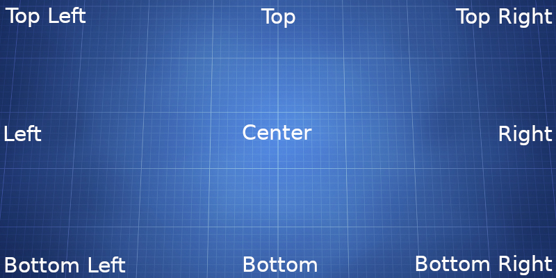

Clear Communication
2021-08-19
This post is meant to help you communicate effectively with UI Designers.
UI Design is an exact visual science. Software like Adobe XD is used to create visual designs for web and mobile applications. It uses precise mathematical values for color, shape, and placement of elements on a digital artboard.
For UI Designers "being creative" while working on a web application means positioning components. These include images, menus, lists, tables, forms, buttons, and text copy. (Designers don't write text copy. That's the copy writers job.)
Within some corporate environments there is little room for being creative. Because the style guide has been established. The tasks have been determined by a committee further up the assembly line. And they've decided on each component's color, shape, size, and placement.
In this situation the UI Designer is like a short order cook who assembles a meal based on the customers selection. They are assigned tasks through tickets with little to no creative input.
Once a design task has been completed it moves down the assembly line to the developers who turn it into code. Sometimes the developers don't follow the design exactly. Instead they approximate the design within the limitations of their own skills and those imposed by the coding languages they use.
The UI Designer can only alter the designs within their software tools based on the tasks assigned to them. The Manager of Development is responsible for how developers interpret the design.
Wherever you are in the corporate hierarchy at some time you may need to talk with a UI Designer. You might need a new design, a change to an existing design, or some other graphical asset.
If you follow the suggestions below when talking with UI Designers you'll have a better experience.

Clear Communcation Rules
-
Stay on target. Make sure you and your UI Designer are looking at the exact same thing. Focus on the design files the UI Designer can update.
-
Know specifically what you want before talking with your UI Designer. Unfortunately UI Designers cannot read minds. There are a thousand different ways to design a button, form, or other component. Like allowing the cook to make you something they want. Given creative freedom, without direction, the UI Designer will make something you won't like. Because their intuition and aesthetics are different from yours.
-
When making requests avoid jumping around within a project or between projects. Let your designer know what Project > Screen > Component you are talking about. Take the time to make sure they understand each change request before moving on to the next one on your list.
-
Describe your request using visual terms like top, right, bottom, left, center in relation to the specific item you want created or changed. Remember specific directions will give you specific results.
-
Focus on the "Look and Feel". Adobe XD is an application primarily focused on visual design. While it can mimic simple behaviors like pressing a button to show another page. This feature is limited. Its best to leave complex dynamic behavior to the developers.
-
Keep tasks focused on the immediate visual change requested. Project managers are accustomed to thinking about the big picture of a project and all the moving parts. UI Designers prefer to focus on the placement of specific components within a small area or on a single page. This narrow focus allows UI Designers to accomplish their tasks quickly.
-
Please let your UI Designer know when you are happy with their work so they can go back to their other tasks.
Here's an example of an bad design request
Bill is the manager and Amy is the designer. The following is a chat conversation between them.
- Bill: I need the button moved to the right. Add this text under it. "Click here to sign up for our newsletter".
- Amy: What project is this for?
- Bill: This is for the Midas project.
- Amy: OK. Which screen is this button on?
- Bill: Its the login screen. Be creative.
- Amy: You said you wanted the button moved to the right. There are two buttons. Which one and how far to the right?
- Bill. Oh, both buttons need to be in the same alignment and moved to the right.
- Amy: OK I can do that. I'm unclear on where you want them to be placed exactly.
- Bill: Just move them until they look good and don't forget to add the text underneath.
- Amy: ?!
In this example Bill has an idea of what he wants but is in a rush and being vague in his description. Amy is confused and getting frustrated with Bill's poor communication skills. What did Bill do wrong?
Here's that same request using clear communication
- Bill: Amy I need you to make a change to the login screen for the Midas project. The newsletter button needs to move below the login button and moved right to align with it. Give it a 20 pixel space between them. Also under the button I need this text added. "You can sign up for our newsletter so you won't miss any updates or deals."
- Amy: OK I have a good idea of what you want. I'm working on the Icarus project at the moment. Give me a few minutes to open the Midas project and make those changes.
- Bill: Sure
- [5 minutes later]
- Amy: Bill I sent you an email with the design change you requested.
- Bill: I got it! That's exactly what I needed. Thank you.
- Amy: Great. I'm going back to the Icarus project now.
- Bill: OK have a good day.
- Amy: You too.
In this example Bill knew specifically what he wanted before making a request.
He failed to ask Amy what she was working on. But because his request was specific enough Amy knew what project, screen, and component he was talking about.
This resulted in Amy being informed enough to make the change quickly. Bill got the result he wanted and both people had a positive and smooth interaction.
Note: Some non-designers do not have the ability to "picture" the change they want.
In that case its best to speak with the Project Manager and have a live design session with the UI Designer. The designer will be able to share their screen and show the non-designer what is possible.
The Project Manager will keep the change requests within the scope of the project timeframe and budget.
In all cases its best to start with clear communication.